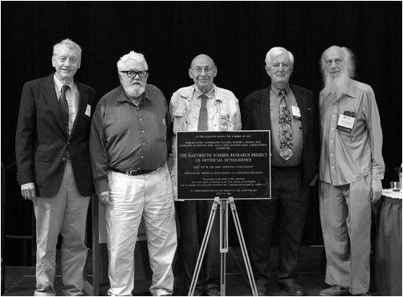
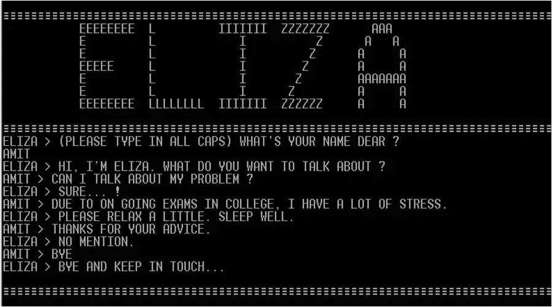

人工智慧的誕生: 1943 - 1956
前情提要:在早期的希臘神話、中世紀時期或19世紀的幻想小說中已經出現過類似人造人、以及會行思考的機器等…，其實人工智慧的基礎就是建立在將人類的思考進行機械化，也就是所謂形式推理，例如：歐幾里得的幾何原本可稱為形式推理的典範。在那之後因為圖靈的出現，使眾人驚呼「一台僅能處理0跟1的機器竟然能夠模擬數學推理過程!」這一創造激發科學家們探討讓機器思考的可能。
早期神經網路
- Norbert Wiener
的控制論描述了電子網絡的控制和穩定性
- Claude Elwood Shannon提出的資訊理論則描述了數位訊號
- Alan Mathison Turing
的計算理論證明數位訊號足以描述任何形式的計算

Walter Pitts和
Warren McCulloch分析了理想化的人工神經元網絡，並且指出了它們進行簡單邏輯運算的機制。他們是最早描述所謂「神經網絡」的學者。
1951年他們的學生
Marvin Lee Minsky與
Dean Edmonds一起建造了第一台神經網絡機，稱為SNARC。
1950年:圖靈測試
由於注意到「智能」這一概念難以確切定義，圖靈提出了著名的圖靈測試：「這項測試的主要目的在於『判斷一台機器是否具有跟人類同等的智能』，主要測試的方法是就由一個提問者C去對兩個觀察對象:機器的A以及人類的B去進行測試，若在測試結束後C無法將A、B區別出人類和機器，那就代表A通過了測試，這項測試在經過變形後，『完全圖靈測試』也成為了現在設計人工智慧的一項參考準則。」
1951年:初嘗試西洋棋AI
Christopher Strachey寫出了一個西洋跳棋程序；Dietrich Prinz則寫出了一個西洋棋程序。
▼左起：摩爾、麥卡錫、明斯基、塞弗里奇、所羅門諾夫。(當時10位參加聚會中的5位)

1956年：達特茅斯會議(AI的誕生)
Marvin Lee Minsky、John McCarthy和另兩位資深科學家Claude Elwood Shannon以及Nathan Rochester組織達特茅斯會議，會議中他們發起了一個人工智慧研究計畫，目的是為了召集志同道合的人來參與討論。主要的議題有：自然計算機、神經網路、計算概論等。

黃金年代: 1956 - 1974
在這一階段中開發出的程序可謂突飛猛進，例如：計算機可以解決代數應用題，證明幾何定理，學習和使用英語。
搜索式推理
所謂的搜索式推理就好比在迷宮裡，你為了找到出路會在路上遇到死路而走回去岔路的地方，而這就是「搜索式推理」。但問題是你不知道你會遇到多少次的岔路，因此出現了啟發式推理。
例如 ：ELIZA為第一個聊天機器人

▲聊天過程
自然語言
- 自然語言處理(NLP)為人工智慧的核心技術之一，是一種透過複雜的數學模型及演算法來讓機器去認知、理解並運用我們的語言的技術。機器翻譯就是NLP應用的一種，我們將需要被翻譯的文本輸入進所謂的NLP系統，而背後的演算法以及模型就會處理辨識、理解、以及生成等流程，最後再輸出被翻譯好的目標語言資訊。
- 自然語言理解(NLU)目的在於讓系統能夠讀懂我們所輸入的資訊，讓其理解文本、語言並提取資訊，以幫助文本分類、語法分析、資訊搜索等下游任務的執行。
- 自然語言生成(NLG)系統的目標是要通過整合、節錄、以及萃取數據庫中的資料，以將這些機器才能讀懂的數據以自然語言的形式輸出。簡單來說即是將只有機器才能看懂的資料架構，也就是像0101010101的機器語言，轉化成人類能理解的字句，以完成如文本摘要、新聞自動化、機器翻譯等任務。
微世界
學科中往往使用簡化模型幫助基本原則的理解。許多研究的場景是「積木世界」，其中包括一個平面，上面擺放著一些不同形狀，尺寸和顏色的積木。他們將這個世界轉成現實，例如利用機械手臂，將在微世界所做的動作移往現實，進而創造出了會堆疊積木的機械手臂。
在微世界中成就最高的為SHRDLU，我們可以在它內部進行物體的移動、命名、查詢等各種操作。
第一次AI低谷: 1974 - 1980
問題:70年代初期，計算機有限的內存以及處理速度不足，再加上計算複雜化與指數爆炸，使得AI無法解決實際的問題，許多人開始認為AI永遠不會發展為實用的系統。
停止撥款
由於AI發展緩慢且方向不明確，1969年時，也有學者建議資助「有明確任務方向」的研究，而不是「無方向」的基礎研究，因此許多國家紛紛停止資助AI研究，到了1974年幾乎找不到任何對AI的資金援助。
來自大學的批評
有些學者開始諷刺AI界未實現的預言，並認為符號對於機器本身並沒有任何意義，因此不能認為機器本身有思考能力。另外有位醫生開發了聊天機器人並將它用於真正的醫療工具，此事造成學者開始思考AI的倫理問題，約瑟夫．維森鮑姆於1976年發表了一本書籍《計算機的力量與人類的推理》，書中認為AI的發明及濫用，將會損害人類生命及價值。
繁榮: 1980 - 1987
專家系統獲得賞識
專家系統是一種能使用具有邏輯規則的知識在專有領域解決問題的一種程序。其避免掉了世俗的常識問題，因此它能夠較容易的修改及實踐，使得AI開始變得實用。1965年出現了能夠依據分光計讀數分辨物質的機器，1972年更是發展出能診斷血液傳染病的機器。
知識革命
專家系統的強大來自於他們所擁有及儲存的專業知識，知識庫系統以及知識工程成為了80年代的一大AI研究方向。而第一個試圖使機器能解決嘗試問題的程序也在80年代出現，方法是建立一個能容納普通人所擁有的常識庫，但這項發明沒有捷徑，只能讓機器學習一個一個的常識，因此幾十年來皆尚未完成。
重獲撥款:第五代工程
首先由日本在1981年提供了八億五千萬美元研究AI，其目標是能創造出一個能與人對話、翻譯語言、解釋圖像，並且能像人一樣具有推理能力的機器。之後，各大國便紛紛響應，撥了比原先好幾倍的巨額來發展AI科技。
連結主義的重生
1982年John Hopfield發明了新型的神經網絡，能夠用全新的方式學習知識及處理信息，連結主義因此重獲新生。1986年「分布式並行處理」的系統問世，此系統問世後也得到了商業上的成功，便被應用於光字符識別和語音識別軟體。
第二次AI低谷: 1987 - 1993

▲Lisp機
1987:Lisp機的市場崩潰
Lisp為函數式程式語言，是目前第二悠久而仍被廣泛使用的高階計算機程序語言，特色為獨特的符號化表示法。另外，Lisp相比早期程式語言較為靈活，足以改變自身形式以適應需求，在人工智慧研究中被應用於計算能力上，長期作為AI領域中最受歡迎的程式語言。
Lisp機為以Lisp為主要軟體開發語言的通用型計算機，但在1987年IBM和Apple電腦沒有用到AI技術但性能上卻超過了價格昂貴的LISP機，便宜且運算力更強的優勢使老產品失去了存在的理由AI硬體市場需求下跌。
1988年:美國取消了新的AI經費。
DARPA的戰略計算促進會（Strategic Computing Initiative）認為AI並非下一個浪潮，投資AI性價比不高，決定撥款給更容易出成果的項目，因此取消了新的AI經費。
1993年:專家系統達到極限
專家系統維護費用居高不下，它們難以使用、升級，而且脆弱，如果輸入異常時便會出現莫名其妙的錯誤，實用性僅僅局限於某些特定情景。
1990年代:日本第五代計算機失敗。
研究五代機項目的人們過分關注邏輯路徑，而且大部分都是試著去用邏輯程序處理早就解決的問題，而不是針對尚未解決或解決得不好的項目，導致五代機沒能證明它能做哪些傳統機不能辦到的功能，使第五代工程與大部分AI項目一樣，沒有在人工智能科學與工程方面取得大規模進展，並沒有什麼真正重要且有用的成果。
AI: 1993 - 至今

▲圖左為深藍機組之一;圖右為Garry Kasparov卡斯巴羅夫
1997年:深藍
台裔美國人許峰雄為深藍的創造者與主要設計者，在美國卡內基美隆大學修讀博士班時就已經開始「人機博弈」的研究，並開發出沉思（Deep Thought）。他在1989年加入IBM研究部門，在由譚崇仁領導的研究小組裡開發專門分析西洋棋的深藍超級電腦，其名字源自其雛型電腦「沉思」(Deep Thought)及IBM的暱稱「巨藍」(Big Blue)兩者合併而成。
深藍輸入了人類的200多萬局棋譜，根據輸入的這些棋譜，可以計算出每一步棋後面的12步變化；同時，在比賽中，深藍排除了一些不必要的決策，以減少分支樹的量，從而加快計算速度。另外，深藍的設計師還能在賽局之間調整電腦程式，以隨時因應對手的風格和策略，使深藍成為首度以電腦戰勝西洋棋世界冠軍Garry Kasparov的第一個計算機系統。

▲自駕車Stanley
2005年:Stanford開發的機器人贏得DARPA挑戰賽頭獎
史丹佛(Stanford)大學開發的自駕車Stanley在沙漠小徑上成功自動行駛131英里，其配備裝置的功能包含可構建周圍環境的三維模型，與GPS共同工作，還有能探測周圍汽車行駛狀況，來確保是否有足夠的超車距離，並且在輪胎上還裝有碼錶，可以更加精確地測定里程，最後成功贏下第二屆DARPA無人車挑戰賽冠軍。
2009年:藍腦計畫
由創始人Henry Markram領導此計畫，透過Blue Gene超級電腦運行，電腦模擬並不僅是包括人工神經網路模型，也包含生物過程的真實神經元模型，和一個經驗重建模型連接組。希望經由藍腦計畫以電腦先模擬出老鼠大腦，進一步模擬出真正的人類大腦，最終目的希望了解人類頭腦複雜的結構和運作方式。
2011:IBM 沃森
IBM公司的首席研究員David Ferrucci領導DeepQA計劃小組開發能夠使用自然語言來回答問題的人工智慧系統Watson(沃森)，是以IBM創始人Thomas J.Watson的名字命名。超級電腦Watson儲存了海量的數據，包含2億頁結構化和非結構化的資訊，包括維基百科的全文，而且其擁有一套邏輯推理程序，可以推理出它認為最正確的答案，並且能使用人類的自然語言回答問題。這要求其具有足夠的速度、精確度和置信度。另外，因為這一系統沒有連接至互聯網，因此不會通過網絡進行搜索，僅靠內存資料庫作答。
2011年，Watson參加綜藝節目《危險邊緣》來測試它的能力，這是該節目有史以來第一次人與機器對決。2月14日至16日廣播的3集節目中，華生在前兩輪中與對手打平，而在最後一集裡，華生打敗了最高獎金得主Brad Rutter和連勝紀錄保持者Ken Jennings。

▲AIphaGo與李世乭對弈
2016年3月:AlphaGo
AlphaGo是Google旗下DeepMind公司研發的一款圍棋人工智慧程式，這個程式主要是以深度學習網路與蒙地卡羅樹搜尋的技術來開發，並以自我學習的方式提高棋力。2015年10月Alpha以5:0完勝歐洲圍棋冠軍、職業二段選手樊麾；2016年3月對戰世界圍棋冠軍、職業九段選手李世乭（이세돌），最終以4:1戰勝。